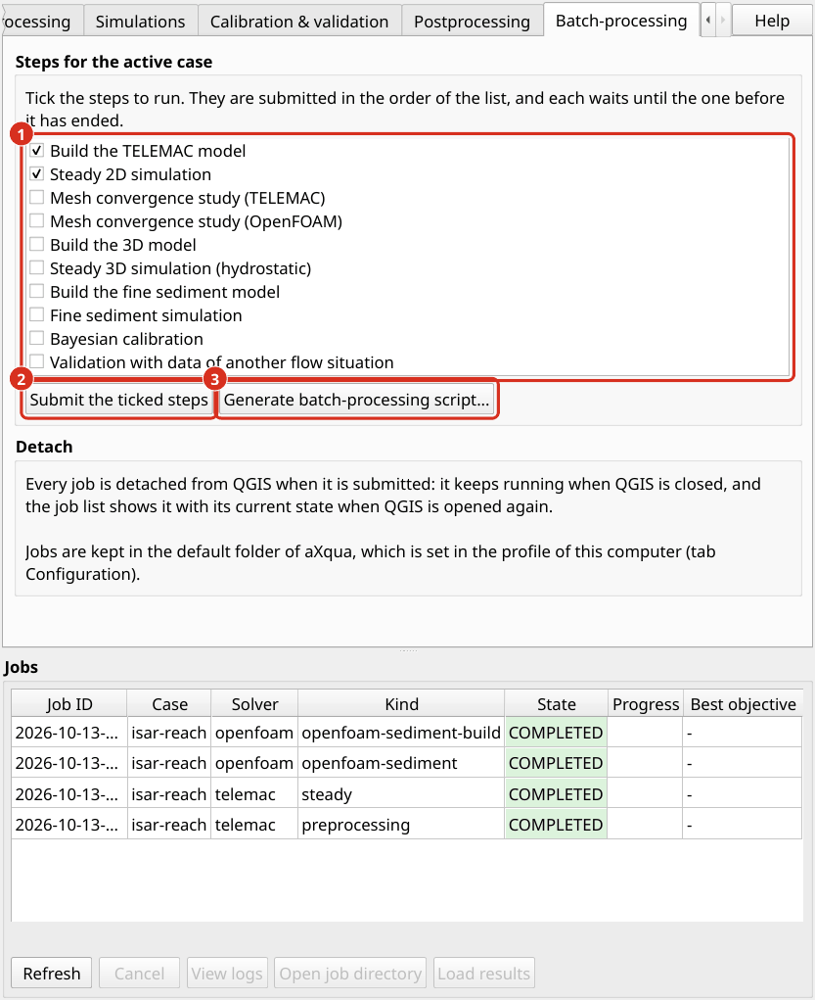

Batch-processing (automatisation visuelle)
Une étude complète comprend plusieurs étapes qui dépendent l’une de l’autre, par exemple prétraitement, une course à sec, un étude de convergence en maillage et un calage. Batch-processing exécute une telle séquence sans supervision.
Une séquence d’étapes
L’onglet Batch-processing liste les étapes du workflow pour le cas actif : la construction du modèle TELEMAC, la simulation 2D stable, l’étude de convergence en maillage, la construction et le fonctionnement du modèle 3D, la construction et le fonctionnement de la simulation sédiments fins, le calage bayésien et la validation. Cochez les étapes à exécuter et cliquez sur Submit the ticked steps. aXqua soumet une tâche par étape dans l’ordre de la liste. Les tâches de ces étapes s’exécutent l’une après l’autre pour un cas, de sorte que chaque étape commence lorsque l’étape avant qu’elle ne se termine. La liste de tâche ci-dessous les onglets montrent waiting for avec l’ID de la tâche qu’une étape attend.


L’onglet Batch-processing. (1) Les étapes du workflow, chacune avec une case à cocher. (2) Submit the ticked steps commence l’un après l’autre. (3) Generate batch-processing script… écrit la même séquence qu’un script pour un terminal.
Une étape d’attente ne vérifie pas si cette étape a réussi. Si la compilation échoue, la simulation qui suit commence néanmoins et échoue avec un message qui indique ce qui manque. Utilisez le script décrit ci-dessous pour une séquence qui doit s’arrêter à la première étape échouée.
Générer le script de traitement par lots. Le bouton Generate batch-processing script… écrit un script shell pour les étapes cochées et le cas actif. Le script soumet les étapes une à la fois, attend chaque tâche, et s’arrête quand une tâche ne se termine pas. Commencez par un terminal avec nohup bash <script> &, de sorte qu’il continue après que le terminal est fermé (Batch-processing (sans tête)).
Détachement : Les tâches se poursuivent sans QGIS
Chaque simulation lancée depuis l’extension est une tâche qui est détachée de QGIS lorsqu’elle est soumise. QGIS peut être fermé après, et l’ordinateur peut être utilisé pour d’autres travaux. Lorsque QGIS est à nouveau ouvert, la liste tâche montre toutes les tâches avec leur état actuel, y compris les tâches qui ont fini ou échoué entre-temps. Une tâche interrompue par un redémarrage de l’ordinateur est marquée comme défaillante et peut être soumise à nouveau. La section Detach de l’onglet indique où les tâches sont conservées et comment elles sont détachées. Les deux sont définis dans le profil de cet ordinateur (Configuration de l’extension).
Séquences avec le concepteur du modèle QGIS
aXqua ajoute trois algorithmes au QGIS Processing Toolbox, qui peuvent être combinés dans le modèle concepteur de QGIS (menu Processing) :
Algorithme |
Fonction |
|---|---|
Submit a simulation job |
Vérifie le cas, crée une tâche et retourne son ID. L’algorithme n’attend pas la simulation. |
Check job status |
Retourne l’état actuel et la progression d’une tâche. |
Import job results |
Charge les résultats d’une tâche complétée avec les styles de carte prédéfinis. |
Avec ces algorithmes, le même cas peut par exemple être soumis pour une série de débits.